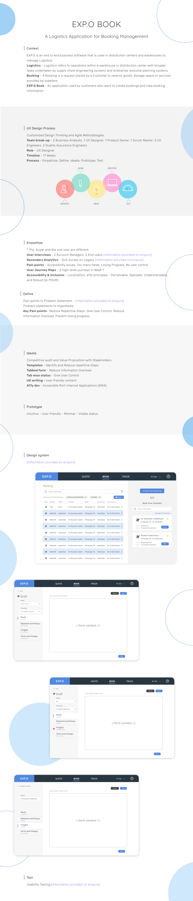

<div class="container">
    <div class="portfolio-single-wrap unslate_co--section" id="portfolio-single-section">

      <div class="portfolio-single-inner">
        <h2 class="heading-portfolio-single-h2">Logistics Booking Application</h2>

        <div class="row justify-content-between mb-5">
          <div class="col-10">
            
          </div>
          <!-- <div class="col-md-6 pr-md-5">
            <p>AJIO is one of the leading online shopping apps in the Indian market. 
                It is a fashion and lifestyle e-commerce, online portal from Reliance, a Fortune 100 company. 
                While Ajio has the advantage of the plethora of brands that are in the Reliance portfolio, across Luxury, Premium and Mass Market, it is predominatly used by budget concious users. 
                I was tasked with redesigning the app in order to appeal to Fashion and Brand conscious users in addition to the existing user base.
            </p>
          </div>
          <div class="col-md-6 pl-md-5">
            <p>The process started off with understanding the fashion scene by interacting with users with different intentions and analysing competitors so as to cater to the growing fashion scene.
                Based on the understanding, we created moodboards and ideations that were fashion forward and scalable. We designed and tested protoypes among multiple users and once we had satisfactory results, we deployed the application to production.</p>
          </div> -->
        </div>

      </div>
    </div>
  </div>